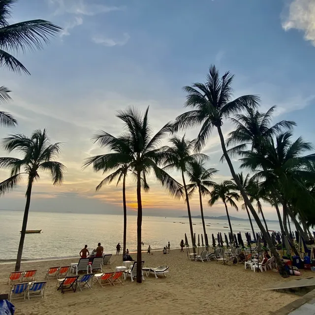

ทะเล/ชายหาด
ดูทั้งหมด

หาดดงตาล
หาดดงตาล ก็ต้องมีต้นตาลขึ้นอยู่ตามชายหาดเป็นจำนวนมาก ซึ่งต้นตาลเหล่านี้ก็จะสร้างร่มเงาให้แก่ชายหาด ทำให้มีคนนิยมมาเดินเล่น ขี่จักรยาน และพักผ่อนริมชายหาดกัน อ่านเพิ่มเติม...

หาดนางรำ
ใครอยากถ่ายรูปสวยๆ กับโลเคชั่นปังๆต้องมาที่ หาดนางรำเลย เพราะที่นี่มีทิวทัศน์ที่สวยงามมาก โดยเฉพาะหาดทรายสีเหลืองนวลเนียนละเอียด และโขดหินต่างๆ อ่านเพิ่มเติม...